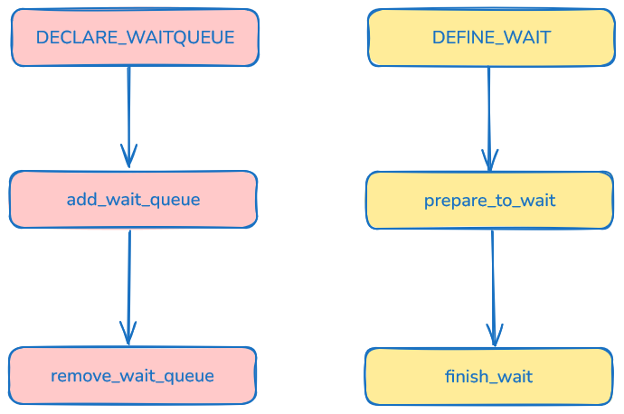
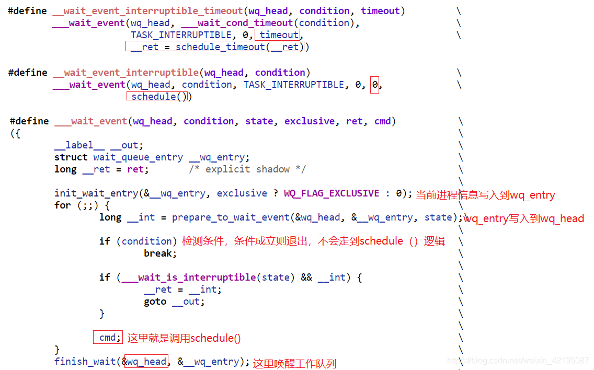

等待队列¶
等待队列是内核中的一种休眠机制，运行中的进程如果需要等待某个事件，可以主动加入等待队列，然后进入休眠状态。当事件发生后，等待队列上的元素被唤醒。
等待队列以循环链表为基础结构，链表头和链表项分别为等待队列头和等待队列元素，用结构体struct wait_queue_head_t和struct wait_queue_entry_t描述：
/* wait_queue_entry::flags */
#define WQ_FLAG_EXCLUSIVE 0x01
#define WQ_FLAG_WOKEN 0x02
#define WQ_FLAG_BOOKMARK 0x04
#define WQ_FLAG_CUSTOM 0x08
#define WQ_FLAG_DONE 0x10
#define WQ_FLAG_PRIORITY 0x20
/*
* A single wait-queue entry structure:
*/
struct wait_queue_entry {
unsigned int flags;
void *private; //指向task_struct
wait_queue_func_t func; //唤醒时调用的函数
struct list_head entry;
};
struct wait_queue_head {
spinlock_t lock;
struct list_head head;
};
typedef struct wait_queue_head wait_queue_head_t;
typedef struct wait_queue_entry wait_queue_entry_t;
typedef int (*wait_queue_func_t)(struct wait_queue_entry *wq_entry, unsigned mode, int flags, void *key);
int default_wake_function(struct wait_queue_entry *wq_entry, unsigned mode, int flags, void *key);
以进程的阻塞与唤醒为例，等待队列的使用场景为：进程 A 因等待某些资源而进入到阻塞状态，便将当前进程加入到等待队列 Q 中。进程 B 在一系列操作后，可通知进程 A 所需资源已到位，便调用wake up()函数来唤醒等待队列上 Q 的进程，注意此时所有等待在队列 Q 上的进程均被置为可运行状态。
注意：由于等待队列 Q 上所有的进程都会被唤醒，假如这些进程都在等待某个共享资源，那么在唤醒的过程中会产生激烈的竞争，最后只有一个进程获得资源，而其他进程不得不再次进入睡眠。这在多线程并发的场景下会出现严重的性能问题。内核为了解决该问题，增加了"独占等待"(WQ_FLAG_EXCLUSIVE)标志，带有此标志的等待任务会被添加到队列尾部，并且只会被唤醒第一个任务。其他一些重要标志比如 WQ_FLAG_WOKEN 表示进程已经被唤醒， WA_FLAG_PRIORITY 表示该进程具有高优先级。
使用方法¶
初始化¶
等待队列头的定义和初始化有两种方式：init_waitqueue_head(&wq_head)和DECLARE_WAIT_QUEUE_HEAD(name)：
#define init_waitqueue_head(wq_head) \
do { \
static struct lock_class_key __key; \
\
__init_waitqueue_head((wq_head), #wq_head, &__key); \
} while (0)
void __init_waitqueue_head(struct wait_queue_head *wq_head, const char *name, struct lock_class_key *key)
{
spin_lock_init(&wq_head->lock);
lockdep_set_class_and_name(&wq_head->lock, key, name);
INIT_LIST_HEAD(&wq_head->head);
}
#define DECLARE_WAIT_QUEUE_HEAD(name) \
struct wait_queue_head name = __WAIT_QUEUE_HEAD_INITIALIZER(name)
#define __WAIT_QUEUE_HEAD_INITIALIZER(name) { \
.lock = __SPIN_LOCK_UNLOCKED(name.lock), \
.head = LIST_HEAD_INIT(name.head) }
等待队列元素的创建可以使用DECLARE_WAITQUEUE(name, tsk)，这将定义一个名为 name 的等待队列元素，并将 private 指针指向 tsk，唤醒函数为default_wake_function()：
#define DECLARE_WAITQUEUE(name, tsk) \
struct wait_queue_entry name = __WAITQUEUE_INITIALIZER(name, tsk)
#define __WAITQUEUE_INITIALIZER(name, tsk) { \
.private = tsk, \
.func = default_wake_function, \
.entry = { NULL, NULL } }
也可以使用DEFINE_WAIT(name)和init_wait(&wait)，这两种方式的默认唤醒函数为autoremove_wake_function()：
#define DEFINE_WAIT(name) DEFINE_WAIT_FUNC(name, autoremove_wake_function)
#define DEFINE_WAIT_FUNC(name, function) \
struct wait_queue_entry name = { \
.private = current, \
.func = function, \
.entry = LIST_HEAD_INIT((name).entry), \
}
#define init_wait(wait) \
do { \
(wait)->private = current; \
(wait)->func = autoremove_wake_function; \
INIT_LIST_HEAD(&(wait)->entry); \
(wait)->flags = 0; \
} while (0)
添加和移除元素¶
内核提供了两个函数，用于将等待队列元素添加到等待队列头中：add_wait_queue()和add_wait_queue_exclusive()。前者将元素添加到队列头，后者将元素添加到队列尾部，并且设置 WQ_FLAG_EXCLUSIVE 标志：
void add_wait_queue(struct wait_queue_head *wq_head, struct wait_queue_entry *wq_entry)
{
unsigned long flags;
// 清除WQ_FLAG_EXCLUSIVE标志
wq_entry->flags &= ~WQ_FLAG_EXCLUSIVE;
spin_lock_irqsave(&wq_head->lock, flags);
__add_wait_queue(wq_head, wq_entry);
spin_unlock_irqrestore(&wq_head->lock, flags);
}
static inline void __add_wait_queue(struct wait_queue_head *wq_head, struct wait_queue_entry *wq_entry)
{
list_add(&wq_entry->entry, &wq_head->head);
}
void add_wait_queue_exclusive(struct wait_queue_head *wq_head, struct wait_queue_entry *wq_entry)
{
unsigned long flags;
// 设置WQ_FLAG_EXCLUSIVE标志
wq_entry->flags |= WQ_FLAG_EXCLUSIVE;
spin_lock_irqsave(&wq_head->lock, flags);
__add_wait_queue_entry_tail(wq_head, wq_entry);
spin_unlock_irqrestore(&wq_head->lock, flags);
}
static inline void __add_wait_queue_entry_tail(struct wait_queue_head *wq_head, struct wait_queue_entry *wq_entry)
{
list_add_tail(&wq_entry->entry, &wq_head->head);
}
remove_wait_queue()函数用于从等待队列中移除元素：
void remove_wait_queue(struct wait_queue_head *wq_head, struct wait_queue_entry *wq_entry)
{
unsigned long flags;
spin_lock_irqsave(&wq_head->lock, flags);
__remove_wait_queue(wq_head, wq_entry);
spin_unlock_irqrestore(&wq_head->lock, flags);
}
static inline void
__remove_wait_queue(struct wait_queue_head *wq_head, struct wait_queue_entry *wq_entry)
{
list_del(&wq_entry->entry);
}

等待事件¶
等待事件可以用于实现简单的进程休眠——进程将一直休眠等待直到某个条件成立。内核提供了以下几个函数：
wait_event(wq_head, condition);
wait_event_interruptible(wq_head, condition);
wait_event_timeout(wq_head, condition, timeout);
wait_event_interruptible_timeout(wq_head, condition, timeout);
io_wait_event(wq_head, condition);
- condition == 0：休眠
- condition == 1：唤醒
它们都用于将进程加入到等待队列，直到某个事件发生。"interruptible"表示可以被信号唤醒，"timeout"表示等待超时时间。

总结使用等待队列让进程休眠的过程：
- 将当前进程关联的等待队列元素加入到等待队列中
- 设置当前进程状态
- 判断资源是否得到，或者是否捕获信号
- 进程主动让出CPU，进入休眠状态
- 资源满足时，唤醒进程，将其状态设置为TASK_RUNNING，并从等待队列中移除
唤醒¶
wake_up()函数用于唤醒等待队列上的进程，它有许多变体：
#define wake_up(x) __wake_up(x, TASK_NORMAL, 1, NULL)
#define wake_up_nr(x, nr) __wake_up(x, TASK_NORMAL, nr, NULL)
#define wake_up_all(x) __wake_up(x, TASK_NORMAL, 0, NULL)
#define wake_up_locked(x) __wake_up_locked((x), TASK_NORMAL, 1)
#define wake_up_all_locked(x) __wake_up_locked((x), TASK_NORMAL, 0)
#define wake_up_interruptible(x) __wake_up(x, TASK_INTERRUPTIBLE, 1, NULL)
#define wake_up_interruptible_nr(x, nr) __wake_up(x, TASK_INTERRUPTIBLE, nr, NULL)
#define wake_up_interruptible_all(x) __wake_up(x, TASK_INTERRUPTIBLE, 0, NULL)
#define wake_up_interruptible_sync(x) __wake_up_sync((x), TASK_INTERRUPTIBLE)
wake_up()函数会遍历等待队列上的所有元素（包括 TASK_INTERRUPTIBLE 和 TASK_UNINTERRUPTIBLE ），根据 nr_exclusive 参数的要求唤醒进程，同时实现了分批次唤醒工作。最终会回调等待队列元素所绑定的唤醒函数。
唤醒的两种回调函数default_wake_function()和autoremove_wake_function()的区别是，后者会将进程从等待队列中移除，而前者不会。
总结¶
休眠方式1：
DECLARE_WAIT_QUEUE_HEAD(queue);
DECLARE_WAITQUEUE(wait, current);
for (;;) {
add_wait_queue(&queue, &wait);
set_current_state(TASK_INTERRUPTIBLE);
if (condition)
break;
schedule();
remove_wait_queue(&queue, &wait);
if (signal_pending(current))
return -ERESTARTSYS;
}
set_current_state(TASK_RUNNING);
remove_wait_queue(&queue, &wait);
休眠方式2：